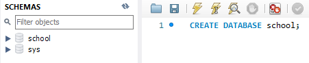

Home Pages:
Informations included in this page:
How to create or remove Databases
How to create, copy or remove tables
How to create or remove Databases
How to create, copy or remove tables
So far, you should know how to view, add and edit data, it is time to learn more about how to design a database from scratch though, how to set up foreign keys, primary keys, and other cool stuff, with queries and by mySQL workbench interface, but first let's learn how to make a database and tables.
You create a database by using the CREATE DATABASE keyword like this:
You can remove a database by using the DROP DATABASE keyword:
I dropped all those databases because a database shouldn't be so specific, students, classes and professors should better be tables inside school database:
To create a table you should use the CREATE TABLE statement:
You can use a subquery to copy a table:
Lastly, to remove a table you can use the DROP TABLE statement:
The ALTER TABLE statement is used to add, delete, or modify columns in an existing table. The ALTER TABLE statement is also used to add and drop various constraints on an existing table.
Here is an example of how to drop a column:
And here is an example of how to add a column:
And lastly here is an example of how to modify a column:
SQL constraints are used to specify rules for data in a table. Constraints can be specified when the table is created with the CREATE TABLE statement, or after the table is created with the ALTER TABLE statement.
SQL constraints are used to specify rules for the data in a table. Constraints can be used to limit the type of data that can go into a table. This ensures the accuracy and reliability of the data in the table. If there is any violation between the constraint and the data action, the action is aborted. Constraints can be column level or table level. Column level constraints apply to a column, and table level constraints apply to the whole table.
The following constraints are commonly used in SQL:
By default, a column can hold NULL values. The NOT NULL constraint enforces a column to NOT accept NULL values. This enforces a field to always contain a value, which means that you cannot insert a new record, or update a record without adding a value to this field.
The following SQL ensures that the "ID", "LastName", and "FirstName" columns will NOT accept NULL values when the "Persons" table is created:
To create a NOT NULL constraint on the "Age" column when the "Persons" table is already created, use the following SQL:
The UNIQUE constraint ensures that all values in a column are different. Both the UNIQUE and PRIMARY KEY constraints provide a guarantee for uniqueness for a column or set of columns. A PRIMARY KEY constraint automatically has a UNIQUE constraint. However, you can have many UNIQUE constraints per table, but only one PRIMARY KEY constraint per table.
The following SQL creates a UNIQUE constraint on the "ID" column when the "Persons" table is created
To name a UNIQUE constraint, and to define a UNIQUE constraint on multiple columns, use the following SQL syntax:
UC_Person is the name we gave the constraint. We name constraints to identify them in the future (e.g. you want to drop it in the future), it should have a unique name. If you don't specify a name for it, the database engine will probably assign a weird name (e.g. containing random stuff to ensure uniqueness) for you. You can see our constraint placed in indexes:
Unique indexes are indexes that help maintain data integrity by ensuring that no two rows of data in a table have identical key values. When you create a unique index for an existing table with data, values in the columns or expressions that comprise the index key are checked for uniqueness
To create a UNIQUE constraint on the "ID" column when the table is already created, use the following SQL:
To name a UNIQUE constraint, and to define a UNIQUE constraint on multiple columns, use the following SQL syntax:
To drop a UNIQUE constraint, use the following SQL:
The PRIMARY KEY constraint uniquely identifies each record in a table. Primary keys must contain UNIQUE values, and cannot contain NULL values. A table can have only ONE primary key; and in the table, this primary key can consist of single or multiple columns (fields).
The following SQL creates a PRIMARY KEY on the "ID" column when the "Persons" table is created:
To allow naming of a PRIMARY KEY constraint, and for defining a PRIMARY KEY constraint on multiple columns, use the following SQL syntax:
Note: In the example above there is only ONE PRIMARY KEY (PK_Person). However, the VALUE of the primary key is made up of TWO COLUMNS (ID + LastName).
To create a PRIMARY KEY constraint on the "ID" column when the table is already created, use the following SQL:
To allow naming of a PRIMARY KEY constraint, and for defining a PRIMARY KEY constraint on multiple columns, use the following SQL syntax:
Note: If you use ALTER TABLE to add a primary key, the primary key column(s) must have been declared to not contain NULL values (when the table was first created).
To drop a PRIMARY KEY constraint, use the following SQL:
The FOREIGN KEY constraint is used to prevent actions that would destroy links between tables. A FOREIGN KEY is a field (or collection of fields) in one table, that refers to the PRIMARY KEY in another table. The table with the foreign key is called the child table, and the table with the primary key is called the referenced or parent table. Look at the following two tables:
| PersonID | LastName | FirstName | Age |
|---|---|---|---|
| 1 | Hansen | Ola | 30 |
| 2 | Svendson | Tove | 23 |
| 3 | Pattersen | Kari | 20 |
| OrderID | OrderNumber | PersonID |
|---|---|---|
| 1 | 77895 | 3 |
| 2 | 44678 | 3 |
| 3 | 22456 | 2 |
| 4 | 24562 | 1 |
Notice that the "PersonID" column in the "Orders" table points to the "PersonID" column in the "Persons" table. The "PersonID" column in the "Persons" table is the PRIMARY KEY in the "Persons" table. The "PersonID" column in the "Orders" table is a FOREIGN KEY in the "Orders" table. The FOREIGN KEY constraint prevents invalid data from being inserted into the foreign key column, because it has to be one of the values contained in the parent table.
The following SQL creates a FOREIGN KEY on the "PersonID" column when the "Orders" table is created:
To allow naming of a FOREIGN KEY constraint, and for defining a FOREIGN KEY constraint on multiple columns, use the following SQL syntax:
If a table uses two columns as it's primary key, then you need to use two columns as the foreign key, and this can be done like this:
To create a FOREIGN KEY constraint on the "PersonID" column when the "Orders" table is already created, use the following SQL:
To allow naming of a FOREIGN KEY constraint, and for defining a FOREIGN KEY constraint on multiple columns, use the following SQL syntax:
To drop a FOREIGN KEY constraint, use the following SQL:
The CHECK constraint is used to limit the value range that can be placed in a column. If you define a CHECK constraint on a column it will allow only certain values for this column. If you define a CHECK constraint on a table it can limit the values in certain columns based on values in other columns in the row.
The following SQL creates a CHECK constraint on the "Age" column when the "Persons" table is created. The CHECK constraint ensures that the age of a person must be 18, or older:
To allow naming of a CHECK constraint, and for defining a CHECK constraint on multiple columns, use the following SQL syntax:
To create a CHECK constraint on the "Age" column when the table is already created, use the following SQL:
To allow naming of a CHECK constraint, and for defining a CHECK constraint on multiple columns, use the following SQL syntax:
To drop a CHECK constraint, use the following SQL:
The DEFAULT constraint is used to set a default value for a column. The default value will be added to all new records, if no other value is specified.
The following SQL sets a DEFAULT value for the "City" column when the "Persons" table is created:
The DEFAULT constraint can also be used to insert system values, by using functions like GETDATE()
To create a DEFAULT constraint on the "City" column when the table is already created, use the following SQL:
To drop a DEFAULT constraint, use the following SQL:
The CREATE INDEX statement is used to create indexes in tables. Indexes are used to retrieve data from the database more quickly than otherwise. The users cannot see the indexes, they are just used to speed up searches/queries.
Note: Updating a table with indexes takes more time than updating a table without (because the indexes also need an update). So, only create indexes on columns that will be frequently searched against.
Creates an index on a table. Duplicate values are allowed:
Creates a unique index on a table. Duplicate values are not allowed:
The DROP INDEX statement is used to delete an index in a table:
By creating indexes for certain columns you can improve the speed of mySQL when searching for specific rows in SELECT statement. The way it works is well explained in the video bellow:
Indexing only the columns you need indexed minimizes the insert/delete/update performance hit. Keep in mind that every index must be updated any time a row is updated, inserted, or deleted. So the more indexes you have, the slower performance you'll have for write operations.
A unique index ensures that the values in the index key columns are unique. A unique constraint also guarantees that no duplicate values can be inserted into the column(s) on which the constraint is created. When a unique constraint is created a corresponding unique index is automatically created on the column(s).
Auto-increment allows a unique number to be generated automatically when a new record is inserted into a table. Often this is the primary key field that we would like to be created automatically every time a new record is inserted.
The following SQL statement defines the "Personid" column to be an auto-increment primary key field in the "Persons" table:
MySQL uses the AUTO_INCREMENT keyword to perform an auto-increment feature. By default, the starting value for AUTO_INCREMENT is 1, and it will increment by 1 for each new record. To let the AUTO_INCREMENT sequence start with another value, use the following SQL statement:
To insert a new record into the "Persons" table, we will NOT have to specify a value for the "Personid" column (a unique value will be added automatically):
The SQL statement above would insert a new record into the "Persons" table. The "Personid" column would be assigned a unique value. The "FirstName" column would be set to "Lars" and the "LastName" column would be set to "Monsen".
In SQL, a view is a virtual table based on the result-set of an SQL statement. A view contains rows and columns, just like a real table. The fields in a view are fields from one or more real tables in the database. You can add SQL statements and functions to a view and present the data as if the data were coming from one single table.
A view is created with the CREATE VIEW statement.
A view can be updated with the CREATE OR REPLACE VIEW statement:
A view is deleted with the DROP VIEW statement:
Views enable us to hide some of the columns from a table, or even add columns, or mix columns from multiple tables. It simplifies complex queries because it can draw data from multiple tables and present it as a single table. It helps in data security that shows only authorized information to the users
SQL injection is a code injection technique that might destroy your database. SQL injection is one of the most common web hacking techniques. SQL injection is the placement of malicious code in SQL statements, via web page input.
QL injection usually occurs when you ask a user for input, like their username/userid, and instead of a name/id, the user gives you an SQL statement that you will unknowingly run on your database. Look at the following example which creates a SELECT statement by adding a variable (txtUserId) to a select string. The variable is fetched from user input (getRequestString):
The rest of this chapter describes the potential dangers of using user input in SQL statements.
Look at the example above again. The original purpose of the code was to create an SQL statement to select a user, with a given user id. If there is nothing to prevent a user from entering "wrong" input, the user can enter some "smart" input like this:
UserID:
Then, the SQL statement will look like this:
The SQL above is valid and will return ALL rows from the "Users" table, since OR 1=1 is always TRUE. Does the example above look dangerous? What if the "Users" table contains names and passwords? A hacker might get access to all the user names and passwords in a database, by simply inserting 105 OR 1=1 into the input field.
Most databases support batched SQL statement. A batch of SQL statements is a group of two or more SQL statements, separated by semicolons. The SQL statement below will return all rows from the "Users" table, then delete the "Suppliers" table.
Look at the following example:
And the following input:
UserID:
The valid SQL statement would look like this:
To protect a web site from SQL injection, you can use SQL parameters. SQL parameters are values that are added to an SQL query at execution time, in a controlled manner.
The following examples shows how to build parameterized queries in some common web languages.
The SQL engine checks each parameter to ensure that it is correct for its column and are treated literally, and not as part of the SQL to be executed.
If you want your web site to be able to store and retrieve data from a database, your web server should have access to a database-system that uses the SQL language. If your web server is hosted by an Internet Service Provider (ISP), you will have to look for SQL hosting plans. The most common SQL hosting databases are MS SQL Server, Oracle, MySQL (which we have been using), and MS Access.
Microsoft's SQL Server is a popular database software for database-driven web sites with high traffic. SQL Server is a very powerful, robust and full featured SQL database system.
Oracle is also a popular database software for database-driven web sites with high traffic. Oracle is a very powerful, robust and full featured SQL database system.
MySQL is also a popular database software for web sites. MySQL is a very powerful, robust and full featured SQL database system. MySQL is an inexpensive alternative to the expensive Microsoft and Oracle solutions.
When a web site requires only a simple database, Microsoft Access can be a solution. MS Access is not well suited for very high-traffic, and not as powerful as MySQL, SQL Server, or Oracle.
A stored procedure is a prepared SQL code that you can save, so the code can be reused over and over again. So if you have an SQL query that you write over and over again, save it as a stored procedure, and then just call it to execute it. You can also pass parameters to a stored procedure, so that the stored procedure can act based on the parameter value(s) that is passed.
Below is a selection from the "Customers" table in the Northwind sample database:
| CustomerID | CustomerName | ContactName | Address | City | PostalCode | Country |
|---|---|---|---|---|---|---|
| 1 |
Alfreds Futterkiste | Maria Anders | Obere Str. 57 | Berlin | 12209 | Germany |
| 2 | Ana Trujillo Emparedados y helados | Ana Trujillo | Avda. de la Constitución 2222 | México D.F. | 05021 | Mexico |
| 3 | Antonio Moreno Taquería | Antonio Moreno | Mataderos 2312 | México D.F. | 05023 | Mexico |
| 4 |
Around the Horn | Thomas Hardy | 120 Hanover Sq. | London | WA1 1DP | UK |
| 5 | Berglunds snabbköp | Christina Berglund | Berguvsvägen 8 | Luleå | S-958 22 | Sweden |
The following SQL statement creates a stored procedure named "SelectAllCustomers" that selects all records from the "Customers" table:
Execute the stored procedure above as follows:
The following SQL statement creates a stored procedure that selects Customers from a particular City from the "Customers" table:
Execute the stored procedure above as follows:
Setting up multiple parameters is very easy. Just list each parameter and the data type separated by a comma as shown below. The following SQL statement creates a stored procedure that selects Customers from a particular City with a particular PostalCode from the "Customers" table:
Execute the stored procedure above as follows: